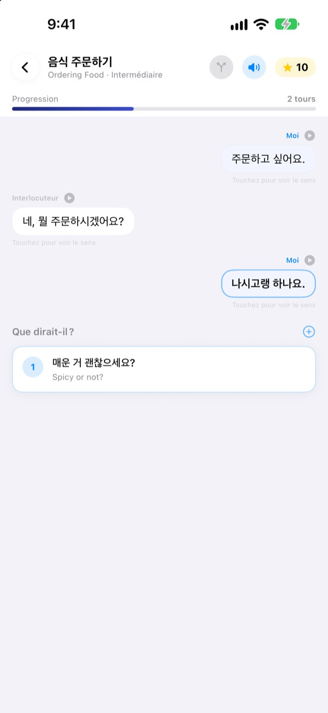
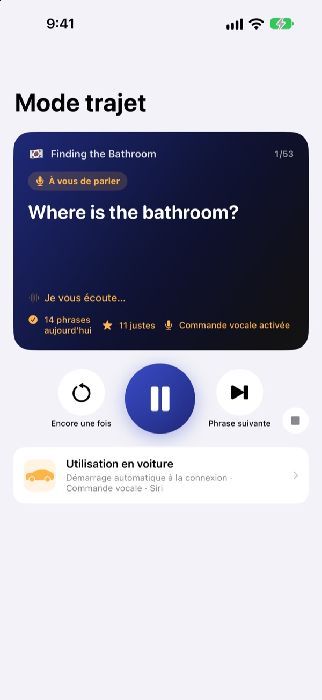
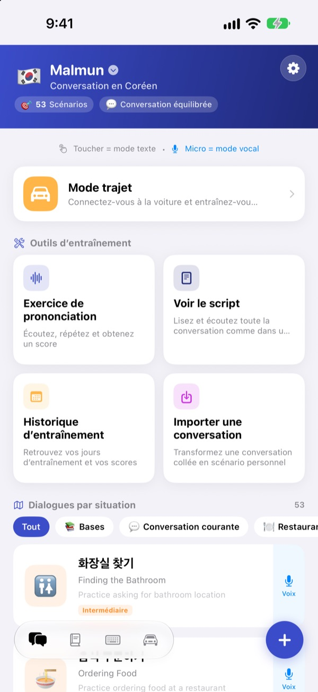
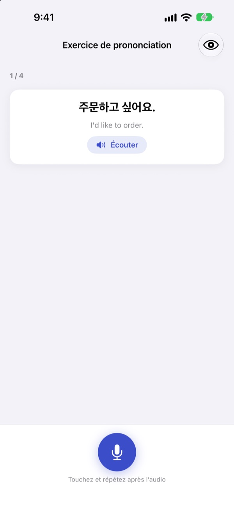

Fini les blancs.
Prenez la parole.
Malmun est un entraîneur de conversation où chaque réponse choisie emmène le dialogue ailleurs. Apprenez le coréen, le japonais, le chinois, l’espagnol ou l’indonésien, et en voiture, entraînez-vous seulement avec vos oreilles et votre voix.
Dialogues à embranchements, prononciation et vocabulaire sont gratuits.

Menez la conversation vous-même
Voici « Bonjour du matin », un dialogue indonésien tiré tel quel de l’app. Chaque phrase choisie oriente l’échange dans une autre direction.
Vous connaissiez la phrase, mais pas la réponse ?
Dans le manuel, les dialogues suivent toujours le script. Dans la vraie vie, on vous répond quelque chose d’inattendu. Malmun vous fait parcourir à l’avance chaque embranchement d’une conversation, pour avoir la phrase suivante prête quoi qu’il arrive. Même le trajet du retour devient un moment d’entraînement.
S’entraîner à l’oreille en conduisant
Le mode trajet passe par les haut-parleurs de la voiture via Bluetooth ou CarPlay. Vous entendez d’abord le sens, un signal sonore vous laisse le temps de le dire, puis la réponse passe une fois lentement et une fois à vitesse normale.
Avancez et réécoutez avec les boutons du volant, ou dites next, again ou slower quand c’est votre tour. La lecture se met en pause pendant les consignes du GPS.

Toutes les situations du voyage et du quotidien
Chaque langue propose 53 dialogues par situation : bases, conversation courante, restaurant, transports, aéroport, hôtel, shopping, visites et urgences.
Si vous apprenez l’indonésien, il y a plus encore : 5 small talks écrits à la main, 3 parcours d’une journée de 6 scènes avec emploi du temps hebdomadaire, et 100 mots pour les voyages d’affaires.

Vérifiez que c’était bien dit
L’exercice de prononciation vous donne un score et colore les mots réussis et ceux qui vous ont échappé.
L’affichage du script déroule tout le dialogue comme une messagerie. Écoutez-le d’une traite, ou masquez les traductions pour vous tester.

Trois étapes pour commencer
- 1
Choisissez une langue
Touchez le drapeau en haut de l’écran d’accueil. Expressions et vocabulaire sont enregistrés séparément pour chaque langue.
- 2
Ouvrez un dialogue
Touchez les réponses en mode texte, ou touchez le micro et parlez : le mode vocal trouve la réponse la plus proche.
- 3
En voiture, le mode trajet
Connectez l’iPhone à la voiture et appuyez sur lecture. Inutile de regarder l’écran.
Commandes du mode trajet
- Volant : piste suivante
- Phrase suivante
- Volant : piste précédente
- La même phrase encore une fois
- Bouton lecture
- Pause et reprise
next·skip- Phrase suivante
again·repeat- Réécouter
slower·faster- Changer la vitesse de lecture
next scene- Passer au dialogue suivant
stop·pause- Arrêter l’entraînement
- Siri : « Lancer l'entraînement trajet dans Malmun »
- Démarrer sans toucher l’iPhone
Quand l’app est en français, les commandes vocales se disent en anglais. Elles ne sont écoutées que pendant votre tour, après le signal. La phrase en cours s’affiche dans les infos de lecture de la voiture. Il n’y a pas d’écran d’app CarPlay dédié.
Presque tout est gratuit. Malmun Pro ouvre le reste.
Gratuit
- Small talk à embranchements et parcours d’une journée (indonésien)
- Dialogues par situation : bases et conversation courante
- Mode trajet, 3 scènes par jour
- Prononciation, script, import de dialogues, historique
- Mes expressions, cartes de vocabulaire, clavier d’expressions
- Partage de scénarios entre amis, scénarios créés par IA
Malmun Pro
- Tous les dialogues par situation : restaurant, transports, aéroport, hôtel, shopping, visites, urgences
- Mode trajet illimité
- Valable pour toutes les langues apprises
Abonnement annuel ou achat unique à vie
Les prix sont indiqués dans l’app et sur l’App Store. L’abonnement annuel se renouvelle automatiquement sauf résiliation au moins 24 heures avant la fin de la période.
Questions fréquentes
Quelles langues puis-je apprendre ?
Le coréen, le japonais, le chinois, l’espagnol et l’indonésien. L’interface est en français, mais les traductions des phrases et les commandes vocales sont en anglais. L’anglais n’apparaît donc pas dans la liste.
Comment l’utiliser en voiture ?
Connectez l’iPhone à la voiture en Bluetooth ou CarPlay, ouvrez le mode trajet et appuyez sur lecture. Le son sort des haut-parleurs et la phrase en cours s’affiche dans « À l’écoute ». Vous pouvez aussi dire à Siri « Lancer l'entraînement trajet dans Malmun », ou créer une fois une automatisation dans l’app Raccourcis pour qu’il démarre dès que CarPlay (ou le Bluetooth de la voiture) se connecte.
Le micro écoute-t-il en permanence ?
Non. Il n’écoute que pendant votre tour, après le signal, avec le micro de l’iPhone, et ce qu’il entend est traité sur l’appareil.
Ma prononciation n’est pas reconnue.
La reconnaissance vocale fonctionne dans la langue que vous apprenez. Essayez dans un endroit plus calme et vérifiez que la reconnaissance vocale de cette langue est téléchargée sur votre appareil.
Comment ajouter le clavier ?
Allez dans Réglages ▸ Général ▸ Clavier ▸ Claviers ▸ Ajouter un clavier et choisissez le clavier Malmun. Touchez le globe en tapant pour basculer. L’accès complet n’est pas nécessaire. Pour afficher moins d’expressions, touchez l’icône clavier en bas à droite de l’écran d’accueil ▸ Gérer le clavier.
Je ne vois pas un scénario partagé par un ami.
Le partage passe par iCloud : vous devez être connectés tous les deux à iCloud. S’il n’apparaît toujours pas, fermez complètement l’app puis rouvrez-la.
Que faut-il pour créer des scénarios avec l’IA ?
Saisissez votre propre clé API Anthropic dans l’app et indiquez un thème : un nouveau dialogue est créé. Tout le reste fonctionne sans clé.
Comment résilier ou me faire rembourser ?
Les paiements sont gérés par Apple. Pour résilier : Réglages de l’iPhone ▸ Compte Apple ▸ Abonnements ▸ Malmun. Pour un remboursement, faites la demande à Apple sur reportaproblem.apple.com.
Nouvel iPhone, et Pro a disparu.
Connectez-vous avec le même compte Apple, puis dans Malmun touchez Réglages ▸ Malmun Pro ▸ Restaurer les achats.
Où est stockée ma progression ?
Aucun compte n’est nécessaire. Vos données restent sur votre appareil et dans votre propre iCloud. Ni publicité ni pistage : seules des statistiques d’utilisation anonymes et des rapports d’erreur sont envoyés. Bugs et suggestions sont aussi les bienvenus sur GitHub Issues (github.com/M1zz/IndonesianSmallTalk/issues).
Une question, une idée ? Écrivez à leeo@kakao.com, passez par Réglages ▸ Envoyer un avis dans l’app, ou sur Instagram : @lee25_ios.